This is what the 40-inch TV by the line will play on repeat: Haley's video with the one-at-a-time checklist, then the slides. Now with sound: music under the slides, pops on the checks, and an impact when the finger lands. Turn your volume up. About two and a half minutes.
The video above uses bed 1. These are 30-second tastes of the alternatives, all free-licence tracks. Say which number you like in the chat and it is a one-line change. The trailer cue for the finger was dropped after feedback; the music now plays straight through.
Eleven signs for the tent walls, black and gold, 18 by 24 inches. First drafts: Haley can open the Canva design and polish whichever ones the team picks. The QR one and the high score one are already in. Say the page numbers you want in the chat.
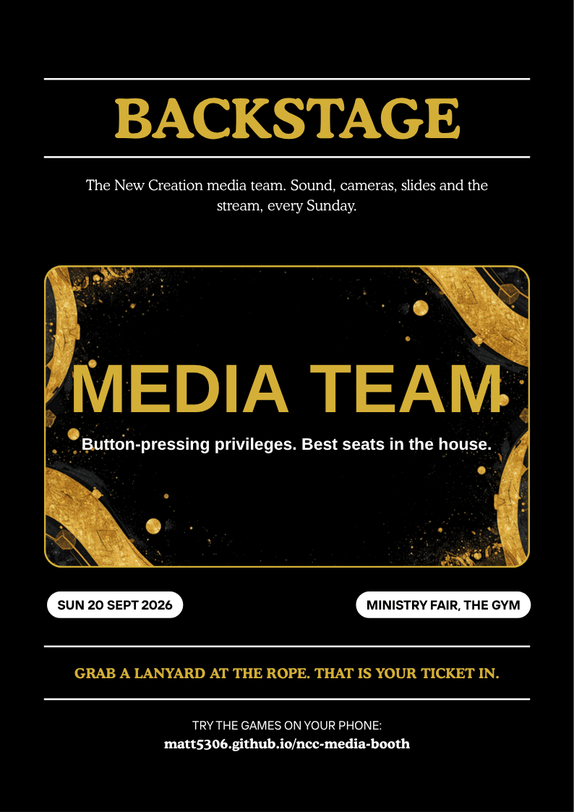
1. Backstage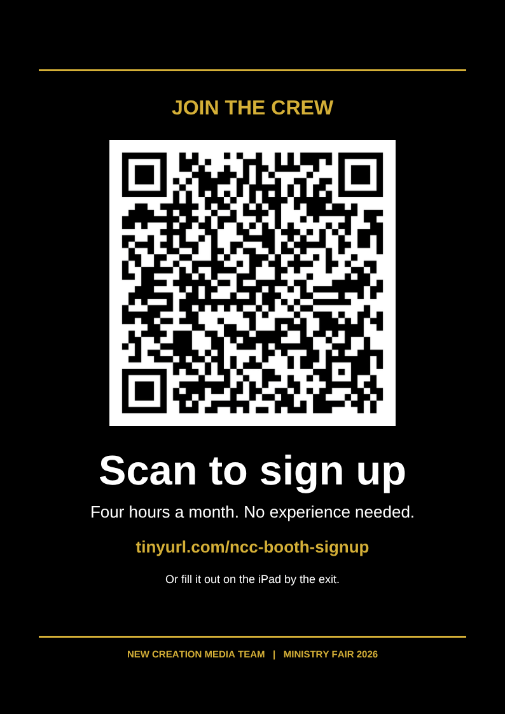
2. Sign-up QR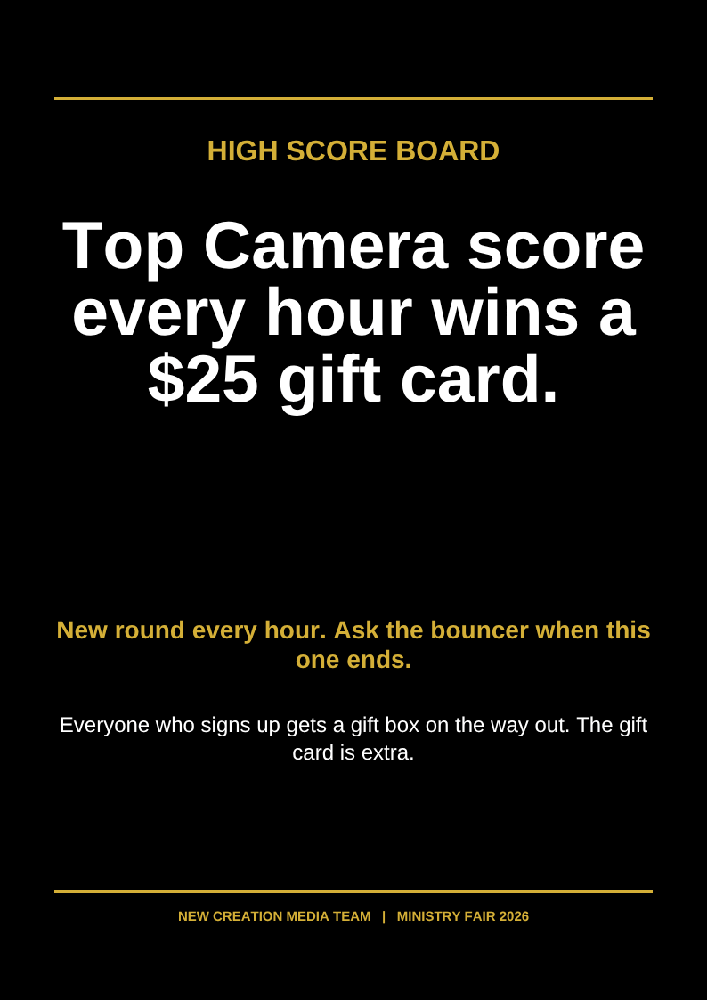
3. High score board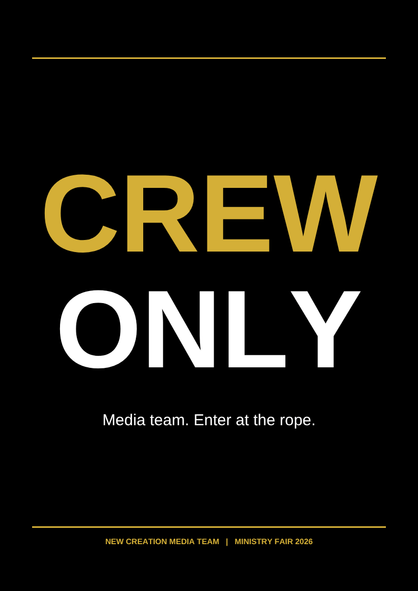
4. Crew only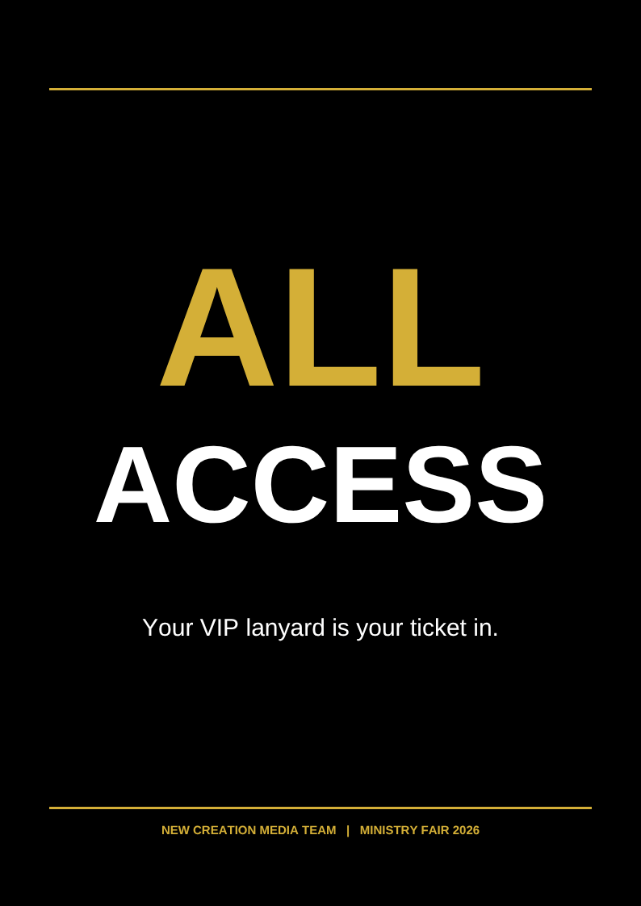
5. All access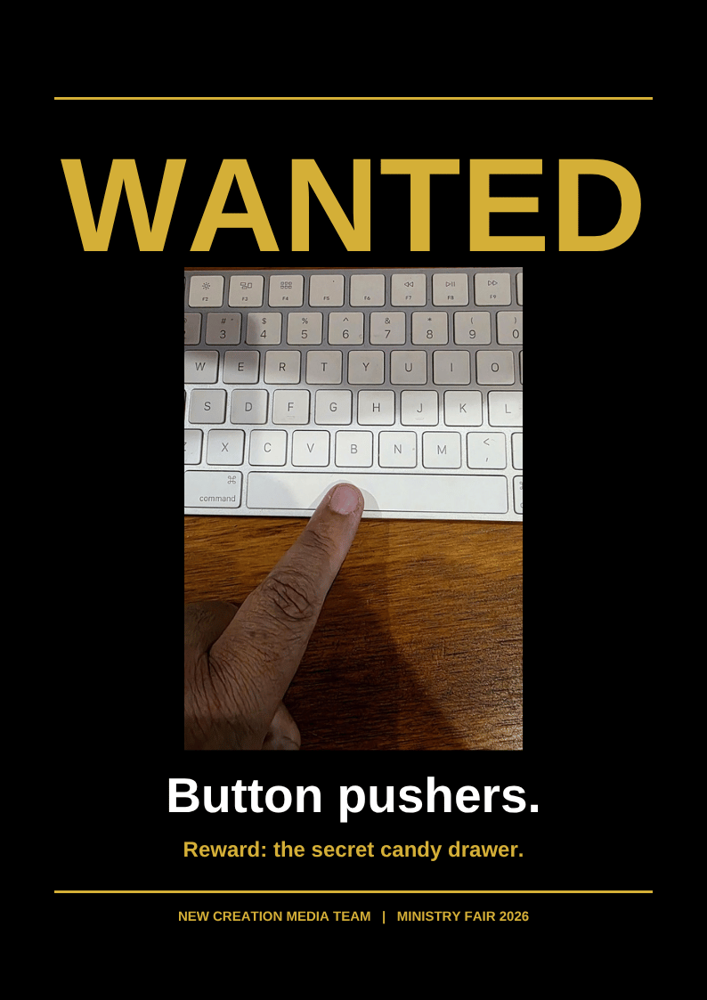
6. Wanted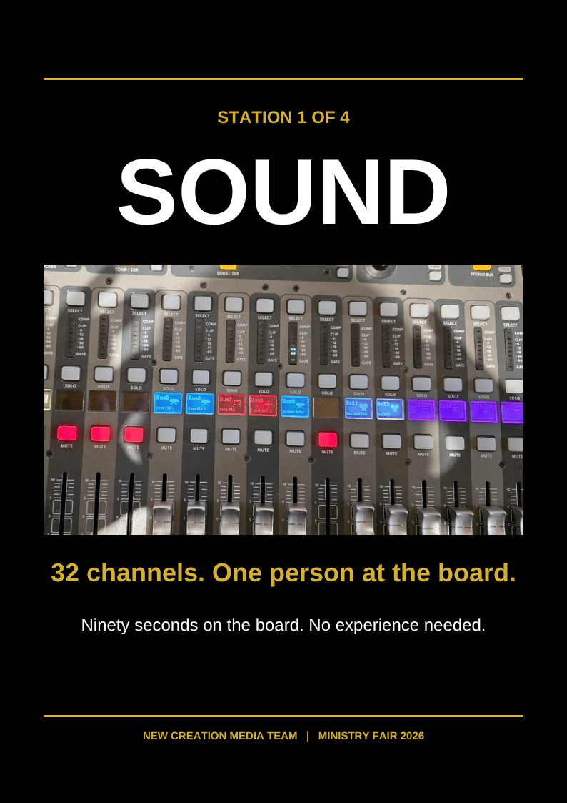
7. Sound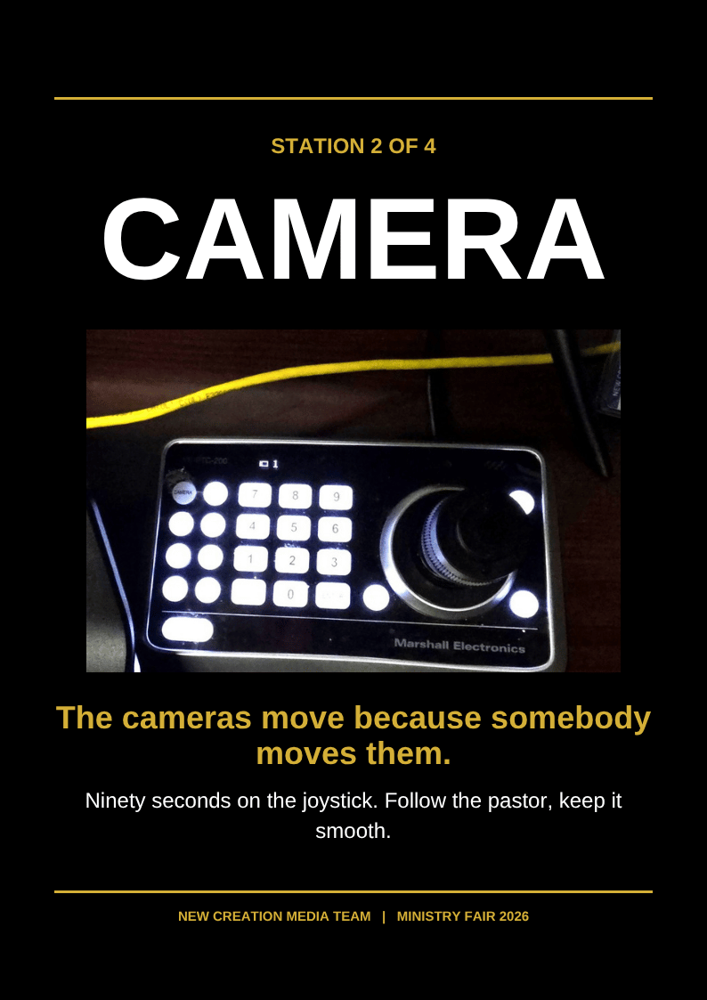
8. Camera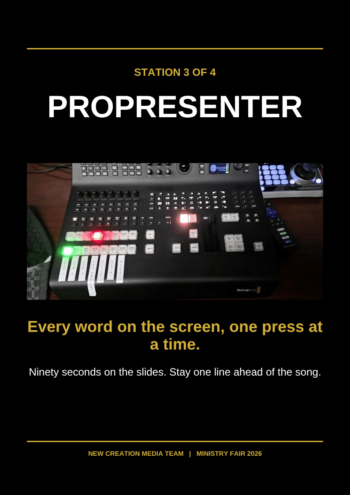
9. ProPresenter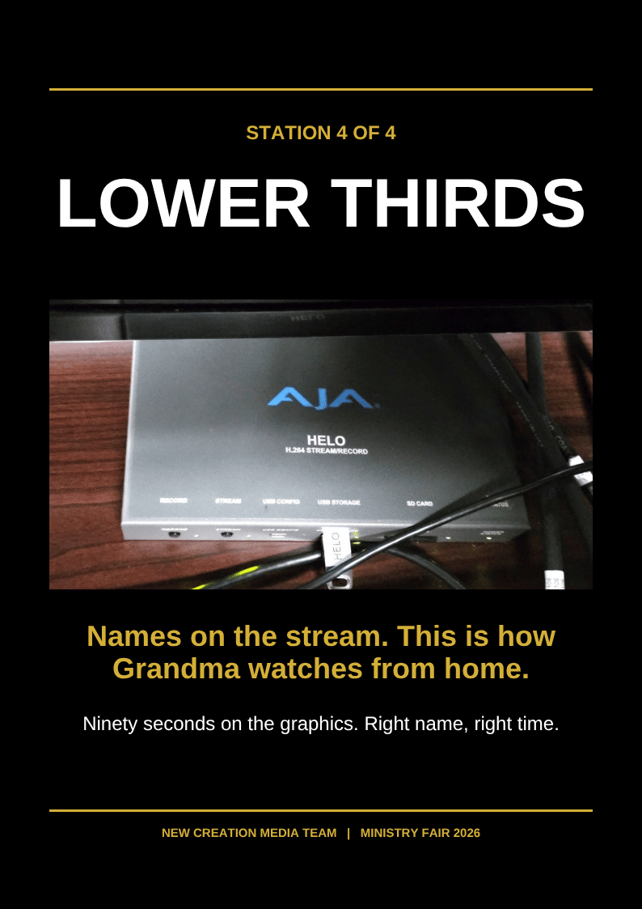
10. Lower Thirds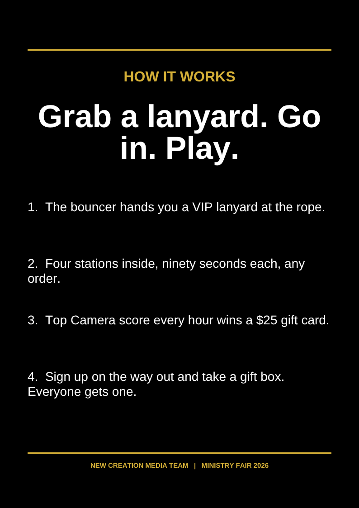
11. How it works{kind=link}
{kind=link}
{kind=link}
{kind=link}
{kind=link}
{kind=link}
{kind=link}
{kind=link}
{kind=link}
{kind=link}
{kind=link}